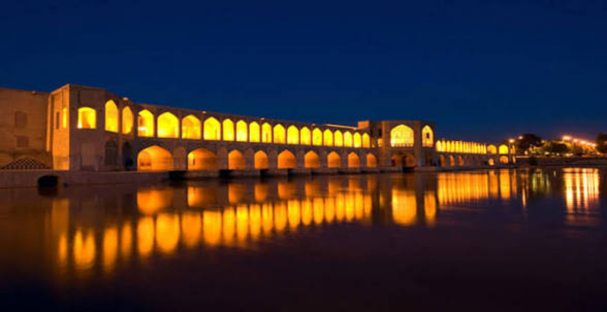

میراث جهانی یونسکو
میراث جهانی یونسکومیدان نقش جهان
میدانی باشکوه از دوران صفوی که مسجدها، بازار و کاخ عالیقاپو را در کنار هم جای داده است.
بیشتر بخوانید ←به شهر هنر و معماری خوش آمدید
از نقشهای فیروزهای مسجدها تا طاقهای باشکوه پلها؛ اصفهان شهری است که در هر گوشهاش داستانی برای گفتن دارد.
کشف دیدنیهای اصفهان ←اصفهان با میدان تاریخی نقش جهان، پلهای زایندهرود، مسجدهای کاشیکاریشده و هنرهای دستیاش یکی از چهرههای ماندگار فرهنگ ایران است. اینجا چند ایستگاه برای شروع کشف شهر پیدا میکنی.
از کجا شروع کنیم؟
میراث جهانی یونسکومیدانی باشکوه از دوران صفوی که مسجدها، بازار و کاخ عالیقاپو را در کنار هم جای داده است.
بیشتر بخوانید ← پل تاریخی
پل تاریخیپل معروف زایندهرود با دهانههای پیدرپی و چشماندازی خاطرهانگیز در امتداد رودخانه.
بیشتر بخوانید ← معماری صفوی
معماری صفوی باغ ایرانی
باغ ایرانیکاخی صفوی در میان باغی تاریخی که به نقاشیها، تالار و ستونهای ایوانش شناخته میشود.
بیشتر بخوانید ← کاشیکاری ایرانی
کاشیکاری ایرانیمسجدی ظریف در ضلع شرقی نقش جهان که به گنبد و کاشیکاریهای دقیقش شهرت دارد.
بیشتر بخوانید ← معماری چنددورهای
معماری چنددورهایمجموعهای تاریخی که لایههای گوناگون معماری ایرانی ـ اسلامی را در خود حفظ کرده است.
بیشتر بخوانید ←تصاویر ارسالی شما

اصفهان، شهر گنبدهای فیروزهای، آجرهای گرم و قصههایی است که هنوز در کوچهها زندهاند.
بیشتر درباره شهر ←ردپای دورههای گوناگون در بناهای شهر
از میناکاری و قلمزنی تا کاشیکاری
گنبدها، ایوانها و پلهای ماندگار
خوراکها و رسمهای محلی دوستداشتنی